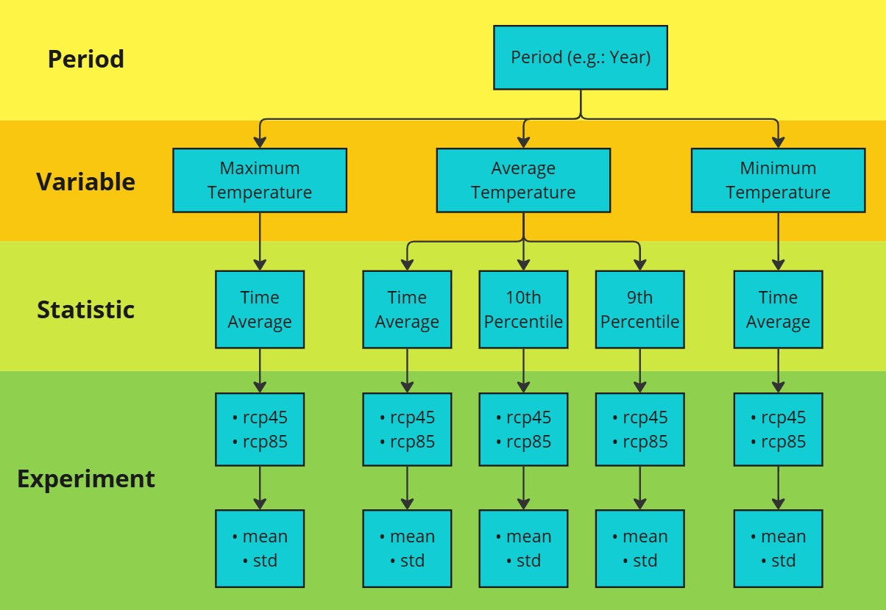
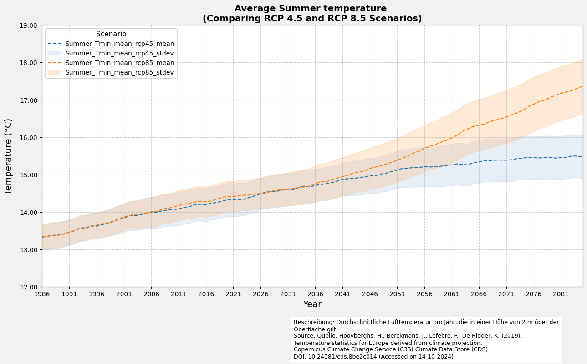
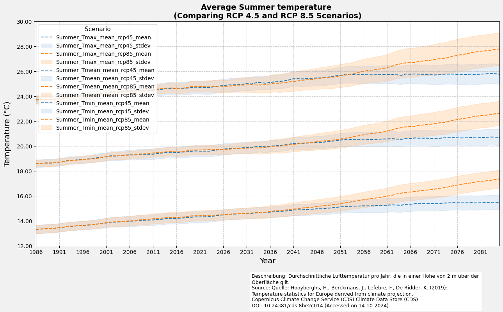
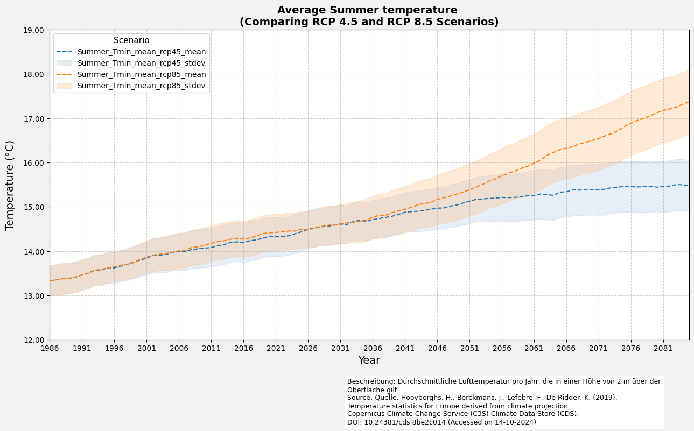
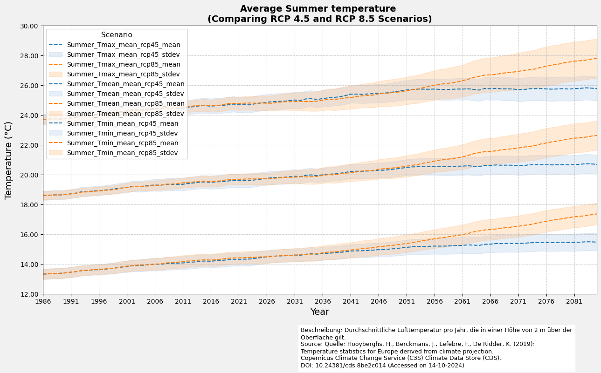

Temperature Statistics for Europe
Deroived from climate projections
This dataset provides temperature exposure statistics for Europe, focusing on daily 2-meter air temperature (mean, minimum, and maximum) for entire years, as well as for winter (DJF) and summer (JJA) seasons. Derived using bias-adjusted EURO-CORDEX data, the statistics span a smoothed 30-year average from 1971 to 2100, resulting in a timeseries from 1986 to 2085, with model ensemble averages and associated standard deviations included. These temperature percentiles are crucial in public health and epidemiology for assessing health risks and impacts, enabling comparisons across regions under various climate change scenarios.
Information on Dataset:
Author: T. Tewes (Stadt Konstanz)
Resolution: 0.1° x 0.1°
Notebook Version: 1.1 (Updated: December 17. 2024)
1. Specifying the paths and working directories
import os
''' ---- Hier die Verzeichnisse angeben ---- '''
download_folder = r".\data\sis-temperature-statistics\download"
working_folder = r".\data\sis-temperature-statistics\working"
geotiff_folder = r".\data\sis-temperature-statistics\geotiff"
csv_folder = r".\data\sis-temperature-statistics\csv"
output_folder = r".\data\sis-temperature-statistics\output"
''' ----- Ende der Eingaben ---- '''
os.makedirs(download_folder, exist_ok=True)
os.makedirs(working_folder, exist_ok=True)
os.makedirs(geotiff_folder, exist_ok=True)
os.makedirs(csv_folder, exist_ok=True)
os.makedirs(output_folder, exist_ok=True)
2. Download and Extract Dataset
2.1 Authentication
import cdsapi
def main():
api_key = "fdae60fd-35d4-436f-825c-c63fedab94a4"
api_url = "https://cds.climate.copernicus.eu/api"
client = cdsapi.Client(url=api_url, key=api_key)
return client
2.2 Request Definition and Download
# Define additional request fields to ensure the request stays within the file size limit.
# These coordinates were obtained using the BBox Extractor tool:
# https://str-ucture.github.io/bbox-extractor/
bbox_wgs84_deutschland = [56.0, 5.8, 47.2, 15.0]
bbox_wgs84_konstanz = [47.9, 8.9, 47.6, 9.3]
# Alternatively, use a shapefile for precise geographic filtering
import geopandas as gpd
import math
# Example: Load shapefile of Konstanz (WGS84 projection)
de_shapefile = r"./shapefiles/de_boundary.shp"
de_gdf = gpd.read_file(de_shapefile)
de_bounds = de_gdf.total_bounds
# Adjust and buffer
de_bounds_adjusted = [(math.floor(de_bounds[0]* 10)/10)-0.1,
(math.floor(de_bounds[1]* 10)/10)-0.1,
(math.ceil(de_bounds[2]* 10)/10)+0.1,
(math.ceil(de_bounds[3]* 10)/10)+0.1]
bbox_de_bounds_adjusted = [de_bounds_adjusted[3], de_bounds_adjusted[0],
de_bounds_adjusted[1], de_bounds_adjusted[2]]
# Define the available options for periods and temperature variables
period_list = ["year", "summer", "winter"]
variable_list = ["average_temperature", "minimum_temperature", "maximum_temperature"]
# Select period and variable for processing; modify these as needed
selected_period = period_list[0] # Default: "year"
selected_variable = variable_list[0] # Default: "average_temperature"
# Display the selected variable and period
print(f"Selected Variable: {selected_variable}\nSelected Period: {selected_period}")
# Define statistics based on the selected variable
# For "average_temperature", include additional statistics; otherwise, use only "time_average"
statistic = (
['time_average', '10th_percentile', '90th_percentile']
if selected_variable == "average_temperature"
else ['time_average']
)
Selected Variable: average_temperature
Selected Period: year
dataset = "sis-temperature-statistics"
request = {
"variable": selected_variable,
"period": selected_period,
"statistic": statistic,
"experiment": [
"rcp4_5",
"rcp8_5"
],
"ensemble_statistic": [
"ensemble_members_average",
"ensemble_members_standard_deviation"
],
"area": bbox_de_bounds_adjusted
}
# Run this cell to download the dataset:
def main_retrieve():
dataset_filename = f"{dataset}_{selected_period}_{selected_variable}.zip"
dataset_filepath = os.path.join(download_folder, dataset_filename)
# Download the dataset only if the dataset has not been downloaded before
if not os.path.isfile(dataset_filepath):
# Download the dataset with the defined request parameters
client.retrieve(dataset, request, dataset_filepath)
else:
print("Dataset already downloaded.")
if __name__ == "__main__":
client = main()
main_retrieve()
2025-01-15 15:16:34,605 INFO [2024-09-28T00:00:00] **Welcome to the New Climate Data Store (CDS)!** This new system is in its early days of full operations and still undergoing enhancements and fine tuning. Some disruptions are to be expected. Your
[feedback](https://jira.ecmwf.int/plugins/servlet/desk/portal/1/create/202) is key to improve the user experience on the new CDS for the benefit of everyone. Thank you.
2025-01-15 15:16:34,605 INFO [2024-09-26T00:00:00] Watch our [Forum](https://forum.ecmwf.int/) for Announcements, news and other discussed topics.
2025-01-15 15:16:34,605 INFO [2024-09-16T00:00:00] Remember that you need to have an ECMWF account to use the new CDS. **Your old CDS credentials will not work in new CDS!**
2025-01-15 15:16:34,606 WARNING [2024-06-16T00:00:00] CDS API syntax is changed and some keys or parameter names may have also changed. To avoid requests failing, please use the "Show API request code" tool on the dataset Download Form to check you are using the correct syntax for your API request.
Dataset already downloaded.
2.3 Extract the Zip folder
import zipfile
extract_folder = os.path.join(working_folder, selected_period)
os.makedirs(extract_folder, exist_ok=True)
# Extract the zip file
try:
if not os.listdir(extract_folder):
for variable in variable_list:
dataset_filename = f"{dataset}_{selected_period}_{variable}.zip"
dataset_filepath = os.path.join(download_folder, dataset_filename)
with zipfile.ZipFile(dataset_filepath, 'r') as zip_ref:
zip_ref.extractall(extract_folder)
print(f"Successfully extracted files to: {extract_folder}")
else:
print("Folder is not empty. Skipping extraction.")
except FileNotFoundError:
print(f"Error: The file {dataset_filepath} was not found.")
except zipfile.BadZipFile:
print(f"Error: The file {dataset_filepath} is not a valid zip file.")
except Exception as e:
print(f"An unexpected error occurred: {e}")
Folder is not empty. Skipping extraction.
3. Read the netCDF file and print the metadata
⚠️ Important: After downloading the datasets, update the selected_period in the code block below to proceed with analysis, data extraction, and visualization.
# Modify the selected period here
selected_period = period_list[1] # 0: year, 1: summer, 2: winter
print(selected_period)
extract_folder = os.path.join(working_folder, selected_period)
summer
import re
import pandas as pd
import netCDF4 as nc
def meta(filename):
match = re.search(r'(mean|p10|p90)_(Tmean|Tmax|Tmin)_(Yearly|Winter|Summer)_(rcp\d{2})_(mean|stdev)_v(\d+\.\d+)\.', filename)
if not match:
raise ValueError("the given filename does not fit the expected naming scheme")
def get_nc_variable():
with nc.Dataset(os.path.join(extract_folder, filename), 'r') as nc_dataset:
nc_variable_name = nc_dataset.variables.keys()
return [*nc_variable_name][0]
return dict(
filename=filename,
path=os.path.join(extract_folder, filename),
ds_period=match.group(3),
ds_variable=match.group(2),
ds_statistic=match.group(1),
variable_name=get_nc_variable(),
rcp=match.group(4),
rcp_statistic=match.group(5),
)
# Beispielverzeichnis (angepasst an deine Umgebung)
nc_files = [meta(f) for f in os.listdir(extract_folder) if f.endswith('.nc')]
nc_files_sorted = sorted(nc_files, key=lambda x: (x['ds_variable'], x['ds_statistic']))
df_nc_files = pd.DataFrame.from_dict(nc_files_sorted)
# Modify pandas display options
pd.options.display.max_colwidth = 30
# Display the DataFrame without displaying path
df_nc_files.loc[:, df_nc_files.columns != 'path']
| filename | ds_period | ds_variable | ds_statistic | variable_name | rcp | rcp_statistic | |
|---|---|---|---|---|---|---|---|
| 0 | mean_Tmax_Summer_rcp45_mea... | Summer | Tmax | mean | mean_Tmax_Summer | rcp45 | mean |
| 1 | mean_Tmax_Summer_rcp45_std... | Summer | Tmax | mean | mean_Tmax_Summer | rcp45 | stdev |
| 2 | mean_Tmax_Summer_rcp85_mea... | Summer | Tmax | mean | mean_Tmax_Summer | rcp85 | mean |
| 3 | mean_Tmax_Summer_rcp85_std... | Summer | Tmax | mean | mean_Tmax_Summer | rcp85 | stdev |
| 4 | mean_Tmean_Summer_rcp45_me... | Summer | Tmean | mean | mean_Tmean_Summer | rcp45 | mean |
| 5 | mean_Tmean_Summer_rcp45_st... | Summer | Tmean | mean | mean_Tmean_Summer | rcp45 | stdev |
| 6 | mean_Tmean_Summer_rcp85_me... | Summer | Tmean | mean | mean_Tmean_Summer | rcp85 | mean |
| 7 | mean_Tmean_Summer_rcp85_st... | Summer | Tmean | mean | mean_Tmean_Summer | rcp85 | stdev |
| 8 | p10_Tmean_Summer_rcp45_mea... | Summer | Tmean | p10 | p10_Tmean_Summer | rcp45 | mean |
| 9 | p10_Tmean_Summer_rcp45_std... | Summer | Tmean | p10 | p10_Tmean_Summer | rcp45 | stdev |
| 10 | p10_Tmean_Summer_rcp85_mea... | Summer | Tmean | p10 | p10_Tmean_Summer | rcp85 | mean |
| 11 | p10_Tmean_Summer_rcp85_std... | Summer | Tmean | p10 | p10_Tmean_Summer | rcp85 | stdev |
| 12 | p90_Tmean_Summer_rcp45_mea... | Summer | Tmean | p90 | p90_Tmean_Summer | rcp45 | mean |
| 13 | p90_Tmean_Summer_rcp45_std... | Summer | Tmean | p90 | p90_Tmean_Summer | rcp45 | stdev |
| 14 | p90_Tmean_Summer_rcp85_mea... | Summer | Tmean | p90 | p90_Tmean_Summer | rcp85 | mean |
| 15 | p90_Tmean_Summer_rcp85_std... | Summer | Tmean | p90 | p90_Tmean_Summer | rcp85 | stdev |
| 16 | mean_Tmin_Summer_rcp45_mea... | Summer | Tmin | mean | mean_Tmin_Summer | rcp45 | mean |
| 17 | mean_Tmin_Summer_rcp45_std... | Summer | Tmin | mean | mean_Tmin_Summer | rcp45 | stdev |
| 18 | mean_Tmin_Summer_rcp85_mea... | Summer | Tmin | mean | mean_Tmin_Summer | rcp85 | mean |
| 19 | mean_Tmin_Summer_rcp85_std... | Summer | Tmin | mean | mean_Tmin_Summer | rcp85 | stdev |
3.1 Short info on downloaded data structure
The diagram shows the structure of sis-temperature-statistics data. It is organized into four levels:
Period: Represents the time unit (e.g., year, summer or winter).
Variable: Three variables:
Average Temperature
Minimum Temperature
Maximum Temperature
Statistic: For each variable, specific statistics are calculated:
Time Average
10th Percentile (for Average Temperature Only)
9th Percentile (for Average Temperature Only)
Experiment: Data is provided under two climate scenarios:
rcp45
rcp85
For each experiment:
rep45_mean, rcp45_std
rep85_mean, rcp85_std
The diagram flows from Period to Variable, then to Statistic, and finally to Experiment outputs. It shows how temperature data is structured and analyzed.
import netCDF4 as nc
seen_variables = set()
for i, nc_file in enumerate(nc_files):
variable_name = nc_file['variable_name']
if variable_name in seen_variables:
continue
# Open the NetCDF file in read mode
nc_dataset = nc.Dataset(nc_file['path'], mode='r')
# List all variables in the dataset
variables_list = nc_dataset.variables.keys()
print(f"{i+1:<2} {variable_name:<17}: Available variables: {list(variables_list)}")
# Add the variable name to the seen set
seen_variables.add(variable_name)
1 mean_Tmax_Summer : Available variables: ['mean_Tmax_Summer', 'height', 'lat', 'lon', 'time']
5 mean_Tmean_Summer: Available variables: ['mean_Tmean_Summer', 'height', 'lat', 'lon', 'time']
9 mean_Tmin_Summer : Available variables: ['mean_Tmin_Summer', 'height', 'lat', 'lon', 'time']
13 p10_Tmean_Summer : Available variables: ['p10_Tmean_Summer', 'quantile', 'lat', 'lon', 'time']
17 p90_Tmean_Summer : Available variables: ['p90_Tmean_Summer', 'quantile', 'lat', 'lon', 'time']
seen_variables = set()
for i, nc_file in enumerate(nc_files):
variable_name = nc_file['variable_name']
if variable_name in seen_variables:
continue
nc_dataset = nc.Dataset(nc_file['path'], mode='r')
variable_data = nc_dataset[variable_name]
# Generate summary of the primary variable
summary = {
"Variable Name": variable_name,
"Data Type": variable_data.dtype,
"Shape": variable_data.shape,
"Variable Info": f"{variable_data.dimensions}",
"Units": getattr(variable_data, "units", "N/A"),
"Long Name": getattr(variable_data, "long_name", "N/A"),
}
# Display dataset summary as a DataFrame for better visualization
nc_summary = pd.DataFrame(list(summary.items()), columns=['Description', 'Remarks'])
# Display the summary DataFrame
print(f"{i+1}.")
display(nc_summary)
# Add the variable name to the seen set
seen_variables.add(variable_name)
if len(seen_variables)>=2:
print("....")
break
1.
| Description | Remarks | |
|---|---|---|
| 0 | Variable Name | mean_Tmax_Summer |
| 1 | Data Type | float32 |
| 2 | Shape | (100, 82, 95) |
| 3 | Variable Info | ('time', 'lat', 'lon') |
| 4 | Units | degrees C |
| 5 | Long Name | Ensemble members average o... |
5.
| Description | Remarks | |
|---|---|---|
| 0 | Variable Name | mean_Tmean_Summer |
| 1 | Data Type | float32 |
| 2 | Shape | (100, 82, 95) |
| 3 | Variable Info | ('time', 'lat', 'lon') |
| 4 | Units | degrees C |
| 5 | Long Name | Ensemble members average o... |
....
4. Export Dataset to CSV
import numpy as np
import netCDF4 as nc
def netcdf_to_dataframe(
nc_file,
bounding_box=None):
"""
Converts a netCDF file to a DataFrame, optionally filtering by a bounding box.
Parameters:
nc_file (dict): Dictionary with keys.
bbox (list): Bounding box as [lon_min, lat_min, lon_max, lat_max] (optional).
Returns:
pd.DataFrame: DataFrame with time, latitude, longitude, and the variable's values.
"""
# Open the netCDF file
nc_dataset = nc.Dataset(nc_file['path'], 'r')
lon = nc_dataset['lon'][:]
lat = nc_dataset['lat'][:]
# Extract time variable and convert it to readable dates
time_var = nc_dataset.variables['time']
time_units = time_var.units
time_calendar = getattr(time_var, "calendar", "standard")
cftime = nc.num2date(time_var[:], units=time_units, calendar=time_calendar)
# Extract temperature/variable data
variable_data = nc_dataset.variables[nc_file['variable_name']]
# Filter by bounding box if provided
if bounding_box:
lon_min, lat_min, lon_max, lat_max = bounding_box
indices_lat = np.where((lat >= lat_min) & (lat <= lat_max))[0]
indices_lon = np.where((lon >= lon_min) & (lon <= lon_max))[0]
start_lat, end_lat = indices_lat[0], indices_lat[-1] + 1
start_lon, end_lon = indices_lon[0], indices_lon[-1] + 1
filtered_lat = lat[start_lat:end_lat]
filtered_lon = lon[start_lon:end_lon]
variable_data_subset = variable_data[:, start_lat:end_lat, start_lon:end_lon]
else:
filtered_lat = lat
filtered_lon = lon
variable_data_subset = variable_data
# Create a column name for the variable
variable_column_name = f"{nc_file['ds_period']}_{nc_file['ds_variable']}_{nc_file['ds_statistic']}_{nc_file['rcp']}_{nc_file['rcp_statistic']}"
print(variable_column_name)
# Create rows for the DataFrame
rows = []
for t in range(variable_data_subset.shape[0]):
for i in range(variable_data_subset.shape[1]):
for j in range(variable_data_subset.shape[2]):
if not np.ma.is_masked(variable_data_subset[t, i, j]):
rows.append({
'time': cftime[t],
'latitude': filtered_lat[i],
'longitude': filtered_lon[j],
variable_column_name: variable_data_subset[t, i, j]
})
# Create a DataFrame from the rows
df = pd.DataFrame(rows)
df['time'] = pd.to_datetime(df['time'].map(str))
df['latitude'] = pd.to_numeric(df['latitude'])
df['longitude'] = pd.to_numeric(df['longitude'])
df[variable_column_name] = pd.to_numeric(df[variable_column_name])
# Set the index to time, latitude, and longitude
return df.set_index(['time', 'latitude', 'longitude'])
# Gpt optimized
import numpy as np
import pandas as pd
import netCDF4 as nc
def netcdf_to_dataframe(nc_file, bounding_box=None):
"""
Converts a netCDF file to a DataFrame, optionally filtering by a bounding box.
Parameters:
nc_file (dict): Dictionary with keys.
bounding_box (list): Bounding box as [lon_min, lat_min, lon_max, lat_max] (optional).
Returns:
pd.DataFrame: DataFrame with time, latitude, longitude, and the variable's values.
"""
# Open the netCDF file
with nc.Dataset(nc_file['path'], 'r') as nc_dataset:
lon = nc_dataset['lon'][:]
lat = nc_dataset['lat'][:]
# Extract time and convert it to readable dates
time_var = nc_dataset.variables['time']
time_units = time_var.units
time_calendar = getattr(time_var, "calendar", "standard")
cftime = nc.num2date(time_var[:], units=time_units, calendar=time_calendar)
# Extract variable data
variable_data = nc_dataset.variables[nc_file['variable_name']]
# Filter by bounding box if provided
if bounding_box:
lon_min, lat_min, lon_max, lat_max = bounding_box
lat_mask = (lat >= lat_min) & (lat <= lat_max)
lon_mask = (lon >= lon_min) & (lon <= lon_max)
lat_indices = np.where(lat_mask)[0]
lon_indices = np.where(lon_mask)[0]
filtered_lat = lat[lat_indices]
filtered_lon = lon[lon_indices]
variable_data_subset = variable_data[:, lat_indices, :][:, :, lon_indices]
else:
filtered_lat = lat
filtered_lon = lon
variable_data_subset = variable_data[:]
# Flatten the data using NumPy
time_size, lat_size, lon_size = variable_data_subset.shape
variable_column_name = f"{nc_file['ds_period']}_{nc_file['ds_variable']}_{nc_file['ds_statistic']}_{nc_file['rcp']}_{nc_file['rcp_statistic']}"
# Masked values will be excluded automatically
masked_data = variable_data_subset.filled(np.nan) # Fill masked values with NaN
valid_mask = ~np.isnan(masked_data)
# Generate time, latitude, longitude mesh grids
time_grid, lat_grid, lon_grid = np.meshgrid(
cftime, filtered_lat, filtered_lon, indexing='ij'
)
# Extract valid (non-NaN) data
time_flat = time_grid[valid_mask]
lat_flat = lat_grid[valid_mask]
lon_flat = lon_grid[valid_mask]
values_flat = masked_data[valid_mask]
# Construct a DataFrame
df = pd.DataFrame({
'time': time_flat,
'latitude': lat_flat,
'longitude': lon_flat,
variable_column_name: values_flat
})
# Convert time to datetime
df['time'] = pd.to_datetime(df['time'].astype(str))
# Set the index
return df.set_index(['time', 'latitude', 'longitude'])
4.1 Create DataFrame and Export as merged CSV file
from tqdm.notebook import tqdm
import textwrap
csv_filename = f"sis-temperature-statistics-{nc_files_sorted[0]['ds_period']}.csv.zip"
csv_path = os.path.join(csv_folder, csv_filename)
if not os.path.isfile(csv_path):
dataframes = [netcdf_to_dataframe(nc_file) for nc_file in tqdm(nc_files_sorted)]
df_merged = pd.concat(dataframes, axis=1)
df_merged.to_csv(csv_path, sep=',', encoding='utf8', compression='zip')
else:
print(f"File already exists at {csv_path}. Skipping export.")
df_merged = pd.read_csv(csv_path).set_index(['time', 'latitude', 'longitude'])
def wrap_column_names(df, width):
wrapped_columns = {col: " ".join(textwrap.wrap(col, width)) for col in df.columns}
return df.rename(columns=wrapped_columns)
# Modify pandas display options
pd.options.display.max_colwidth = 30
pd.options.display.float_format = '{:,.2f}'.format
# Display DataFrame
df_wrapped = wrap_column_names(df_merged, width=11)
df_wrapped
File already exists at .\data\sis-temperature-statistics\csv\sis-temperature-statistics-Summer.csv.zip. Skipping export.
| Summer_Tmax _mean_rcp45 _mean | Summer_Tmax _mean_rcp45 _stdev | Summer_Tmax _mean_rcp85 _mean | Summer_Tmax _mean_rcp85 _stdev | Summer_Tmea n_mean_rcp4 5_mean | Summer_Tmea n_mean_rcp4 5_stdev | Summer_Tmea n_mean_rcp8 5_mean | Summer_Tmea n_mean_rcp8 5_stdev | Summer_Tmea n_p10_rcp45 _mean | Summer_Tmea n_p10_rcp45 _stdev | Summer_Tmea n_p10_rcp85 _mean | Summer_Tmea n_p10_rcp85 _stdev | Summer_Tmea n_p90_rcp45 _mean | Summer_Tmea n_p90_rcp45 _stdev | Summer_Tmea n_p90_rcp85 _mean | Summer_Tmea n_p90_rcp85 _stdev | Summer_Tmin _mean_rcp45 _mean | Summer_Tmin _mean_rcp45 _stdev | Summer_Tmin _mean_rcp85 _mean | Summer_Tmin _mean_rcp85 _stdev | |||
|---|---|---|---|---|---|---|---|---|---|---|---|---|---|---|---|---|---|---|---|---|---|---|
| time | latitude | longitude | ||||||||||||||||||||
| 1986-06-01 | 47.10 | 5.70 | 24.18 | 0.20 | 24.18 | 0.19 | 18.79 | 0.26 | 18.79 | 0.25 | 14.36 | 0.29 | 14.36 | 0.29 | 23.32 | 0.30 | 23.32 | 0.32 | 13.35 | 0.47 | 13.35 | 0.45 |
| 5.80 | 23.92 | 0.23 | 23.92 | 0.21 | 18.59 | 0.27 | 18.59 | 0.27 | 14.09 | 0.28 | 14.09 | 0.27 | 23.20 | 0.41 | 23.20 | 0.45 | 13.21 | 0.41 | 13.21 | 0.41 | ||
| 5.90 | 23.34 | 0.23 | 23.34 | 0.22 | 18.15 | 0.20 | 18.15 | 0.20 | 13.62 | 0.23 | 13.62 | 0.22 | 22.78 | 0.37 | 22.78 | 0.42 | 12.91 | 0.30 | 12.91 | 0.30 | ||
| 6.00 | 22.82 | 0.20 | 22.82 | 0.18 | 17.63 | 0.21 | 17.63 | 0.20 | 13.11 | 0.28 | 13.11 | 0.27 | 22.23 | 0.24 | 22.23 | 0.27 | 12.38 | 0.35 | 12.38 | 0.33 | ||
| 6.10 | 22.25 | 0.21 | 22.25 | 0.18 | 17.12 | 0.22 | 17.12 | 0.21 | 12.56 | 0.27 | 12.56 | 0.26 | 21.75 | 0.30 | 21.75 | 0.33 | 11.93 | 0.38 | 11.93 | 0.37 | ||
| ... | ... | ... | ... | ... | ... | ... | ... | ... | ... | ... | ... | ... | ... | ... | ... | ... | ... | ... | ... | ... | ... | ... |
| 2085-06-01 | 55.20 | 14.70 | 23.74 | 0.72 | 24.96 | 0.70 | 18.65 | 0.50 | 19.90 | 0.44 | 15.12 | 0.39 | 16.34 | 0.39 | 22.39 | 0.73 | 23.67 | 0.60 | 13.17 | 0.84 | 14.48 | 0.76 |
| 14.80 | 24.18 | 0.81 | 25.41 | 0.80 | 18.67 | 0.50 | 19.94 | 0.44 | 15.05 | 0.40 | 16.29 | 0.39 | 22.57 | 0.80 | 23.87 | 0.67 | 12.73 | 0.84 | 14.08 | 0.75 | ||
| 14.90 | 24.30 | 0.82 | 25.56 | 0.80 | 18.61 | 0.51 | 19.91 | 0.47 | 14.96 | 0.41 | 16.21 | 0.39 | 22.57 | 0.87 | 23.92 | 0.73 | 12.48 | 0.66 | 13.86 | 0.61 | ||
| 15.00 | 24.22 | 0.67 | 25.47 | 0.65 | 18.66 | 0.52 | 19.96 | 0.47 | 15.04 | 0.42 | 16.30 | 0.40 | 22.55 | 0.83 | 23.88 | 0.66 | 12.68 | 0.58 | 14.04 | 0.52 | ||
| 15.10 | 24.11 | 0.75 | 25.32 | 0.69 | 18.83 | 0.51 | 20.10 | 0.45 | 15.36 | 0.40 | 16.59 | 0.42 | 22.49 | 0.77 | 23.77 | 0.63 | 13.15 | 0.69 | 14.48 | 0.65 |
729100 rows × 20 columns
4.2 Filter by Area, Create DataFrame and Export as merged CSV file
# Define additional request fields to ensure the request stays within the file size limit.
# These coordinates were obtained using the BBox Extractor tool:
# https://str-ucture.github.io/bbox-extractor/
# Bounding box for the Konstanz region (WGS84 projection):
bbox_wgs84_konstanz = [47.9, 8.9, 47.6, 9.3] # Format: [North, West, South, East]
bbox_wgs84_konstanz_standard = [9.0, 47.6, 9.3, 47.8] # Standard format: [West, South, East, North]
csv_filename = f"sis-temperature-statistics-subset-{nc_files_sorted[0]['ds_period']}.csv.zip"
csv_path = os.path.join(csv_folder, csv_filename)
if not os.path.isfile(csv_path):
dataframes = [netcdf_to_dataframe(nc_file, bounding_box=bbox_wgs84_konstanz_standard) for nc_file in tqdm(nc_files_sorted)]
df_merged = pd.concat(dataframes, axis=1)
df_merged.to_csv(csv_path, sep=',', encoding='utf8', compression='zip')
else:
print(f"File already exists at {csv_path}. Skipping export.")
df_merged = pd.read_csv(csv_path).set_index(['time', 'latitude', 'longitude'])
# Display DataFrame
df_wrapped = wrap_column_names(df_merged, width=11)
df_wrapped
File already exists at .\data\sis-temperature-statistics\csv\sis-temperature-statistics-subset-Summer.csv.zip. Skipping export.
| Summer_Tmax _mean_rcp45 _mean | Summer_Tmax _mean_rcp45 _stdev | Summer_Tmax _mean_rcp85 _mean | Summer_Tmax _mean_rcp85 _stdev | Summer_Tmea n_mean_rcp4 5_mean | Summer_Tmea n_mean_rcp4 5_stdev | Summer_Tmea n_mean_rcp8 5_mean | Summer_Tmea n_mean_rcp8 5_stdev | Summer_Tmea n_p10_rcp45 _mean | Summer_Tmea n_p10_rcp45 _stdev | Summer_Tmea n_p10_rcp85 _mean | Summer_Tmea n_p10_rcp85 _stdev | Summer_Tmea n_p90_rcp45 _mean | Summer_Tmea n_p90_rcp45 _stdev | Summer_Tmea n_p90_rcp85 _mean | Summer_Tmea n_p90_rcp85 _stdev | Summer_Tmin _mean_rcp45 _mean | Summer_Tmin _mean_rcp45 _stdev | Summer_Tmin _mean_rcp85 _mean | Summer_Tmin _mean_rcp85 _stdev | |||
|---|---|---|---|---|---|---|---|---|---|---|---|---|---|---|---|---|---|---|---|---|---|---|
| time | latitude | longitude | ||||||||||||||||||||
| 1986-06-01 | 47.60 | 9.00 | 23.73 | 0.43 | 23.73 | 0.37 | 18.57 | 0.32 | 18.57 | 0.27 | 13.88 | 0.38 | 13.88 | 0.35 | 23.14 | 0.34 | 23.14 | 0.31 | 13.26 | 0.29 | 13.26 | 0.27 |
| 9.10 | 23.87 | 0.44 | 23.87 | 0.38 | 18.73 | 0.33 | 18.73 | 0.28 | 14.02 | 0.40 | 14.02 | 0.37 | 23.31 | 0.36 | 23.31 | 0.33 | 13.43 | 0.29 | 13.43 | 0.26 | ||
| 9.20 | 23.82 | 0.37 | 23.82 | 0.32 | 18.77 | 0.28 | 18.77 | 0.24 | 14.09 | 0.36 | 14.09 | 0.33 | 23.31 | 0.35 | 23.31 | 0.34 | 13.51 | 0.23 | 13.51 | 0.21 | ||
| 47.70 | 9.00 | 23.96 | 0.31 | 23.96 | 0.26 | 18.74 | 0.24 | 18.74 | 0.20 | 14.06 | 0.32 | 14.06 | 0.31 | 23.23 | 0.26 | 23.23 | 0.24 | 13.35 | 0.30 | 13.35 | 0.29 | |
| 9.10 | 24.20 | 0.36 | 24.20 | 0.30 | 18.96 | 0.29 | 18.96 | 0.25 | 14.27 | 0.36 | 14.27 | 0.34 | 23.49 | 0.32 | 23.49 | 0.28 | 13.56 | 0.31 | 13.56 | 0.29 | ||
| ... | ... | ... | ... | ... | ... | ... | ... | ... | ... | ... | ... | ... | ... | ... | ... | ... | ... | ... | ... | ... | ... | ... |
| 2085-06-01 | 47.70 | 9.10 | 26.26 | 0.84 | 28.28 | 1.35 | 21.07 | 0.66 | 23.01 | 1.02 | 16.06 | 0.68 | 17.39 | 0.80 | 26.01 | 0.61 | 28.38 | 1.22 | 15.73 | 0.57 | 17.64 | 0.73 |
| 9.20 | 26.31 | 0.84 | 28.32 | 1.34 | 21.17 | 0.68 | 23.10 | 1.03 | 16.15 | 0.68 | 17.49 | 0.80 | 26.11 | 0.63 | 28.48 | 1.23 | 15.89 | 0.59 | 17.79 | 0.76 | ||
| 47.80 | 9.00 | 24.98 | 0.69 | 27.00 | 1.19 | 20.16 | 0.63 | 22.11 | 0.92 | 15.28 | 0.67 | 16.63 | 0.74 | 24.98 | 0.64 | 27.33 | 1.14 | 15.24 | 0.78 | 17.14 | 0.86 | |
| 9.10 | 25.38 | 0.68 | 27.41 | 1.14 | 20.35 | 0.59 | 22.29 | 0.87 | 15.39 | 0.65 | 16.73 | 0.71 | 25.21 | 0.62 | 27.59 | 1.06 | 15.19 | 0.63 | 17.09 | 0.72 | ||
| 9.20 | 25.37 | 0.64 | 27.38 | 1.09 | 20.30 | 0.54 | 22.22 | 0.81 | 15.33 | 0.61 | 16.68 | 0.67 | 25.16 | 0.60 | 27.52 | 0.99 | 15.11 | 0.52 | 16.98 | 0.63 |
900 rows × 20 columns
5. Export Dataset to GeoTIFF
5.1 Function to exort the Dataset as GeoTIFF File(s)
import numpy as np
from rasterio.transform import from_origin
import rasterio
from tqdm.notebook import tqdm
def main_export_geotiff(
nc_file,
bounding_box=None,
start_year=None,
end_year=None,
merged=None,
output_directory=None):
"""
Export the entire multi-year dataset or a specified range as a single merged GeoTIFF file.
Parameters:
nc_file (dict): A dictionary with keys 'path' (file path), 'variable', 'rcp', and 'statistic'.
bounding_box (list): [lon_min, lat_min, lon_max, lat_max] (optional).
start_year (int): Starting year for the dataset (optional).
end_year (int): Ending year for the dataset (optional).
merged (bool): Whether to generate merged GeoTIFF or individual GeoTIFFs (optional).
output_directory (str): Directory to save the output GeoTIFF files (optional).
"""
# Open the netCDF file
with nc.Dataset(nc_file['path'], 'r') as nc_dataset:
nc_dataset = nc.Dataset(nc_file['path'], 'r')
lon = nc_dataset['lon'][:]
lat = nc_dataset['lat'][:]
# Filter by bounding box if provided
if bounding_box:
lon_min, lat_min, lon_max, lat_max = bounding_box
indices_lat = np.where((lat >= lat_min) & (lat <= lat_max))[0]
indices_lon = np.where((lon >= lon_min) & (lon <= lon_max))[0]
start_lat, end_lat = indices_lat[0], indices_lat[-1] + 1
start_lon, end_lon = indices_lon[0], indices_lon[-1] + 1
else:
start_lat, end_lat = 0, len(lat)
start_lon, end_lon = 0, len(lon)
lat = lat[start_lat:end_lat]
lon = lon[start_lon:end_lon]
# Extract time variable and convert it to readable dates
time_var = nc_dataset.variables['time']
time_units = time_var.units
time_calendar = getattr(time_var, "calendar", "standard")
cftime = nc.num2date(time_var[:], units=time_units, calendar=time_calendar)
# Compute spatial resolution and raster transformation
dx = abs(lon[1] - lon[0])
dy = abs(lat[1] - lat[0])
transform = from_origin(lon.min() - dx / 2, lat.min() - dy / 2, dx, -dy)
# Determine the time range
min_year = cftime[0].year
max_year = cftime[-1].year
if start_year and end_year:
# Adjust start_year and end_year based on the available cftime range
if start_year < min_year:
print(f"Provided start year {start_year} is earlier than the dataset range. Adjusting start year to {min_year}.")
if end_year > max_year:
print(f"Provided end year {end_year} is later than the dataset range. Adjusting end year to {max_year}.")
start_year = max(start_year, min_year)
end_year = min(end_year, max_year)
dt_full_start = start_year
dt_full_end = end_year
else:
# Default to the full dataset
dt_full_start = min_year
dt_full_end = max_year
start_year = min_year
end_year = max_year
# Find indices corresponding to the specified year range
start_index = next(i for i, dt in enumerate(cftime) if dt.year == start_year)
end_index = next(i for i, dt in enumerate(cftime) if dt.year == end_year) + 1 # Year
# Extract temperature/variable data
variable_data = nc_dataset.variables[nc_file['variable_name']]
variable_data_subset = variable_data[start_index:end_index,
start_lat:end_lat,
start_lon:end_lon]
# Create subset directory name based on the nc_file
nc_filename = f"{nc_file['ds_statistic']}_{nc_file['ds_variable']}_{nc_file['ds_period']}_{nc_file['rcp']}_{nc_file['rcp_statistic']}"
if f"{nc_file['ds_variable']}" == "Tmax":
period_sub_directory = "Maximum temperature"
elif f"{nc_file['ds_variable']}" == "Tmean":
period_sub_directory = "Average temperature"
elif f"{nc_file['ds_variable']}" == "Tmin":
period_sub_directory = "Minimum temperature"
if merged:
# Create a merged GeoTIFF containing all time slices as separate bands
if output_directory:
save_directory_path = output_directory
else:
subset_directory_path = os.path.join(geotiff_folder, f"{nc_file['ds_period']}-merged")
os.makedirs(subset_directory_path, exist_ok=True)
save_directory_path = os.path.join(subset_directory_path, period_sub_directory)
os.makedirs(save_directory_path, exist_ok=True)
output_filename = f"{nc_filename}-merged-{dt_full_start}-{dt_full_end}.tif"
output_filepath = os.path.join(save_directory_path, output_filename)
# Create a GeoTIFF with multiple bands for each time slice
with rasterio.open(
output_filepath,
"w",
driver = "GTiff",
dtype = str(variable_data_subset.dtype),
width = variable_data_subset.shape[2],
height = variable_data_subset.shape[1],
count = variable_data_subset.shape[0],
crs = "EPSG:4326",
nodata = -9999,
transform=transform,
) as dst:
for year_index in tqdm(range(variable_data_subset.shape[0]),
desc=f"Exporting merged GeoTIFF file from {start_year} to {end_year}"):
band_data = variable_data_subset[year_index,:,:]
dt = cftime[start_index + year_index]
band_desc = f"{dt.year:04d}-{dt.month:02d}-{dt.day:02d}"
# Write each year slice as a band
dst.write(band_data, year_index + 1)
dst.set_band_description(year_index + 1, band_desc)
else:
if output_directory:
save_directory_path = output_directory
else:
subset_directory_path = os.path.join(geotiff_folder, f"{nc_file['ds_period']}-individual")
os.makedirs(subset_directory_path, exist_ok=True)
save_directory_path = os.path.join(subset_directory_path, period_sub_directory)
os.makedirs(save_directory_path, exist_ok=True)
for year_index in tqdm(range(variable_data_subset.shape[0]),
desc="Exporting individual GeoTIFF files"):
# Retrieve the date for the current time slice
dt = cftime[start_index + year_index]
dt_full = f"{dt.year:04d}-{dt.month:02d}-{dt.day:02d}"
# Define the output GeoTIFF file path
output_filename = f"{nc_filename}_{dt_full}.tif"
output_filepath = os.path.join(save_directory_path, output_filename)
# Export the current time slice as a GeoTIFF
with rasterio.open(
output_filepath,
"w",
driver="GTiff",
dtype=str(variable_data_subset.dtype),
width=variable_data_subset.shape[2],
height=variable_data_subset.shape[1],
count=1,
crs="EPSG:4326",
nodata=-9999,
transform=transform,
) as dst:
year_precipitation_data = variable_data_subset[year_index, :, :]
dst.write(year_precipitation_data, 1)
dst.set_band_description(1, f"{dt.year:04d}-{dt.month:02d}-{dt.day:02d}")
5.2 Export selected dataset to GeoTIFF
# Specify the year range to filter and combine data into a single GeoTIFF.
# If no range is provided, the full dataset will be used.
# If same start and end year is used for export, then old GeoTIFF file will be replaced.
if __name__ == "__main__":
# Export all merged
for nc_file in nc_files:
main_export_geotiff(nc_file=nc_file,
bounding_box=None,
merged=True) # Merged GeoTIFF
# # Uncomment and run this code to save individual GeoTIFF files
# if __name__ == "__main__":
# # Export all individual
# for nc_file in nc_files:
# main_export_geotiff(nc_file=nc_file,
# bounding_box=None,
# merged=False) # Individual GeoTIFF
if __name__ == "__main__":
# Additional case (Advanced filtering)
temp_folder = os.path.join(geotiff_folder, "_temp_folder")
os.makedirs(temp_folder, exist_ok=True)
main_export_geotiff(nc_file=nc_file,
bounding_box=bbox_wgs84_konstanz_standard,
start_year=2000,
end_year=2020,
merged=True,
output_directory=temp_folder) # Merged, Date filtered and Area filtered
6. Plot using Matplotlib
import matplotlib.pyplot as plt
lon_min, lat_min, lon_max, lat_max = bbox_wgs84_konstanz_standard
# Filter the dataframe with query
filtered_df = (
df_merged.query(
"@lat_min <= latitude <= @lat_max and @lon_min <= longitude <= @lon_max"
)
.reset_index()
.set_index("time")
)
# Display DataFrame
df_wrapped = wrap_column_names(filtered_df, width=11)
df_wrapped.head()
| latitude | longitude | Summer_Tmax _mean_rcp45 _mean | Summer_Tmax _mean_rcp45 _stdev | Summer_Tmax _mean_rcp85 _mean | Summer_Tmax _mean_rcp85 _stdev | Summer_Tmea n_mean_rcp4 5_mean | Summer_Tmea n_mean_rcp4 5_stdev | Summer_Tmea n_mean_rcp8 5_mean | Summer_Tmea n_mean_rcp8 5_stdev | ... | Summer_Tmea n_p10_rcp85 _mean | Summer_Tmea n_p10_rcp85 _stdev | Summer_Tmea n_p90_rcp45 _mean | Summer_Tmea n_p90_rcp45 _stdev | Summer_Tmea n_p90_rcp85 _mean | Summer_Tmea n_p90_rcp85 _stdev | Summer_Tmin _mean_rcp45 _mean | Summer_Tmin _mean_rcp45 _stdev | Summer_Tmin _mean_rcp85 _mean | Summer_Tmin _mean_rcp85 _stdev | |
|---|---|---|---|---|---|---|---|---|---|---|---|---|---|---|---|---|---|---|---|---|---|
| time | |||||||||||||||||||||
| 1986-06-01 | 47.60 | 9.00 | 23.73 | 0.43 | 23.73 | 0.37 | 18.57 | 0.32 | 18.57 | 0.27 | ... | 13.88 | 0.35 | 23.14 | 0.34 | 23.14 | 0.31 | 13.26 | 0.29 | 13.26 | 0.27 |
| 1986-06-01 | 47.60 | 9.10 | 23.87 | 0.44 | 23.87 | 0.38 | 18.73 | 0.33 | 18.73 | 0.28 | ... | 14.02 | 0.37 | 23.31 | 0.36 | 23.31 | 0.33 | 13.43 | 0.29 | 13.43 | 0.26 |
| 1986-06-01 | 47.60 | 9.20 | 23.82 | 0.37 | 23.82 | 0.32 | 18.77 | 0.28 | 18.77 | 0.24 | ... | 14.09 | 0.33 | 23.31 | 0.35 | 23.31 | 0.34 | 13.51 | 0.23 | 13.51 | 0.21 |
| 1986-06-01 | 47.70 | 9.00 | 23.96 | 0.31 | 23.96 | 0.26 | 18.74 | 0.24 | 18.74 | 0.20 | ... | 14.06 | 0.31 | 23.23 | 0.26 | 23.23 | 0.24 | 13.35 | 0.30 | 13.35 | 0.29 |
| 1986-06-01 | 47.70 | 9.10 | 24.20 | 0.36 | 24.20 | 0.30 | 18.96 | 0.29 | 18.96 | 0.25 | ... | 14.27 | 0.34 | 23.49 | 0.32 | 23.49 | 0.28 | 13.56 | 0.31 | 13.56 | 0.29 |
5 rows × 22 columns
# Group by the 'time' index and calculate the mean for each group
filtered_df_average = filtered_df.groupby(level='time').mean()
filtered_df_average = filtered_df_average.drop(columns=['latitude', 'longitude'])
# Display DataFrame
df_wrapped = wrap_column_names(filtered_df_average, width=11)
df_wrapped
| Summer_Tmax _mean_rcp45 _mean | Summer_Tmax _mean_rcp45 _stdev | Summer_Tmax _mean_rcp85 _mean | Summer_Tmax _mean_rcp85 _stdev | Summer_Tmea n_mean_rcp4 5_mean | Summer_Tmea n_mean_rcp4 5_stdev | Summer_Tmea n_mean_rcp8 5_mean | Summer_Tmea n_mean_rcp8 5_stdev | Summer_Tmea n_p10_rcp45 _mean | Summer_Tmea n_p10_rcp45 _stdev | Summer_Tmea n_p10_rcp85 _mean | Summer_Tmea n_p10_rcp85 _stdev | Summer_Tmea n_p90_rcp45 _mean | Summer_Tmea n_p90_rcp45 _stdev | Summer_Tmea n_p90_rcp85 _mean | Summer_Tmea n_p90_rcp85 _stdev | Summer_Tmin _mean_rcp45 _mean | Summer_Tmin _mean_rcp45 _stdev | Summer_Tmin _mean_rcp85 _mean | Summer_Tmin _mean_rcp85 _stdev | |
|---|---|---|---|---|---|---|---|---|---|---|---|---|---|---|---|---|---|---|---|---|
| time | ||||||||||||||||||||
| 1986-06-01 | 23.71 | 0.35 | 23.71 | 0.30 | 18.60 | 0.31 | 18.60 | 0.28 | 13.93 | 0.36 | 13.93 | 0.36 | 23.10 | 0.35 | 23.10 | 0.33 | 13.33 | 0.35 | 13.33 | 0.33 |
| 1987-06-01 | 23.72 | 0.35 | 23.72 | 0.30 | 18.62 | 0.31 | 18.62 | 0.28 | 13.94 | 0.36 | 13.94 | 0.36 | 23.11 | 0.35 | 23.11 | 0.33 | 13.35 | 0.35 | 13.35 | 0.33 |
| 1988-06-01 | 23.75 | 0.35 | 23.75 | 0.30 | 18.64 | 0.31 | 18.64 | 0.28 | 13.95 | 0.36 | 13.95 | 0.36 | 23.15 | 0.35 | 23.15 | 0.33 | 13.38 | 0.35 | 13.38 | 0.33 |
| 1989-06-01 | 23.73 | 0.35 | 23.73 | 0.30 | 18.64 | 0.31 | 18.64 | 0.28 | 13.94 | 0.36 | 13.94 | 0.36 | 23.15 | 0.35 | 23.15 | 0.33 | 13.38 | 0.35 | 13.38 | 0.33 |
| 1990-06-01 | 23.75 | 0.35 | 23.75 | 0.30 | 18.66 | 0.31 | 18.66 | 0.28 | 13.95 | 0.36 | 13.95 | 0.36 | 23.19 | 0.35 | 23.19 | 0.33 | 13.41 | 0.35 | 13.41 | 0.33 |
| ... | ... | ... | ... | ... | ... | ... | ... | ... | ... | ... | ... | ... | ... | ... | ... | ... | ... | ... | ... | ... |
| 2081-06-01 | 25.77 | 0.80 | 27.61 | 1.31 | 20.68 | 0.64 | 22.45 | 0.98 | 15.67 | 0.67 | 16.95 | 0.77 | 25.60 | 0.63 | 27.77 | 1.19 | 15.46 | 0.58 | 17.17 | 0.72 |
| 2082-06-01 | 25.79 | 0.80 | 27.64 | 1.31 | 20.69 | 0.64 | 22.47 | 0.98 | 15.68 | 0.67 | 16.97 | 0.77 | 25.62 | 0.63 | 27.81 | 1.19 | 15.47 | 0.58 | 17.21 | 0.72 |
| 2083-06-01 | 25.82 | 0.80 | 27.67 | 1.31 | 20.73 | 0.64 | 22.51 | 0.98 | 15.74 | 0.67 | 17.00 | 0.77 | 25.64 | 0.63 | 27.84 | 1.19 | 15.50 | 0.58 | 17.25 | 0.72 |
| 2084-06-01 | 25.80 | 0.80 | 27.75 | 1.31 | 20.72 | 0.64 | 22.58 | 0.98 | 15.74 | 0.67 | 17.05 | 0.77 | 25.61 | 0.63 | 27.91 | 1.19 | 15.49 | 0.58 | 17.31 | 0.72 |
| 2085-06-01 | 25.77 | 0.80 | 27.79 | 1.31 | 20.69 | 0.64 | 22.63 | 0.98 | 15.71 | 0.67 | 17.06 | 0.77 | 25.60 | 0.63 | 27.97 | 1.19 | 15.47 | 0.58 | 17.37 | 0.72 |
100 rows × 20 columns
import matplotlib.pyplot as plt
import matplotlib.ticker as ticker
def plot_with_shaded_area(ax, x, y_mean, y_stdev, line_color, fill_color, line_label, fill_label, marker_style):
"""Helper function to plot mean lines with shaded area."""
ax.plot(x, y_mean, color=line_color, label=line_label, marker=marker_style, markevery=5, linestyle='--')
ax.fill_between(x, y_mean - y_stdev, y_mean + y_stdev, color=fill_color, alpha=0.3, label=fill_label)
def plot_line_and_shade(filtered_df_average, variable_name_list):
# Create the plot
fig, ax = plt.subplots(figsize=(13, 7), facecolor='#f1f1f1', edgecolor='k')
y_max_list = []
y_min_list = []
for variable_name in variable_name_list:
# Create the plot:
# Plot data for rcp45
plot_with_shaded_area(
ax=ax,
x=filtered_df_average.index,
y_mean=filtered_df_average[f"{variable_name}_rcp45_mean"],
y_stdev=filtered_df_average[f"{variable_name}_rcp45_stdev"],
line_color='#1f77b4',
fill_color='#aec7e8',
line_label=f"{variable_name}_rcp45_mean",
fill_label=f"{variable_name}_rcp45_stdev",
marker_style=None
)
# Plot data for rcp85
plot_with_shaded_area(
ax=ax,
x=filtered_df_average.index,
y_mean=filtered_df_average[f"{variable_name}_rcp85_mean"],
y_stdev=filtered_df_average[f"{variable_name}_rcp85_stdev"],
line_color='#ff7f0e',
fill_color='#ffbb78',
line_label=f"{variable_name}_rcp85_mean",
fill_label=f"{variable_name}_rcp85_stdev",
marker_style=None
)
# Interval
interval = 1
# Set the Y-axis range dynamically
rcp45_min = filtered_df_average[f"{variable_name}_rcp45_mean"].min() - filtered_df_average[f"{variable_name}_rcp45_stdev"].max()
rcp85_min = filtered_df_average[f"{variable_name}_rcp85_mean"].min() - filtered_df_average[f"{variable_name}_rcp85_stdev"].max()
y_min = min(rcp45_min, rcp85_min) - 0.5
y_min = y_min // interval * interval
rcp45_max = filtered_df_average[f"{variable_name}_rcp45_mean"].max() + filtered_df_average[f"{variable_name}_rcp45_stdev"].max()
rcp85_max = filtered_df_average[f"{variable_name}_rcp85_mean"].max() + filtered_df_average[f"{variable_name}_rcp85_stdev"].max()
y_max = max(rcp45_max, rcp85_max) + 0.5
y_max = (y_max + interval) // interval * interval
y_max_list.append(y_max)
y_min_list.append(y_min)
ax.set_ylim(min(y_min_list), max(y_max_list))
# Adjust x-ticks for better readability
ax.set_xlim(filtered_df_average.index.min(), filtered_df_average.index.max())
ax.set_xticks(filtered_df_average.index[::5])
tick_positions = filtered_df_average.index[::5]
tick_labels = [str(pd.to_datetime(date).year) for date in tick_positions]
ax.set_xticks(ticks=tick_positions, labels=tick_labels, rotation=0)
# Add gridlines
ax.grid(visible=True, color='#b0b0b0', linestyle='--', linewidth=0.8, alpha=0.6)
ax.yaxis.set_major_formatter(ticker.FormatStrFormatter('%0.2f'))
# Customize plot labels and title
ax.set_xlabel('Year', fontsize=14)
ax.set_ylabel('Temperature (°C)', fontsize=14, labelpad=10)
ax.set_title(
f"Average {variable_name.split('_')[0]} temperature \n(Comparing RCP 4.5 and RCP 8.5 Scenarios)",
fontsize=14,
fontweight='bold'
)
# Add description and source
plt.figtext(
0.5,
-0.075,
(
'Beschreibung: Durchschnittliche Lufttemperatur pro Jahr, die in einer Höhe von 2 m über der Oberfläche gilt.\n'
'Source: Quelle: Hooyberghs, H., Berckmans, J., Lefebre, F., De Ridder, K. (2019):\n'
'Temperature statistics for Europe derived from climate projection.\n'
'Copernicus Climate Change Service (C3S) Climate Data Store (CDS).\n'
'DOI: 10.24381/cds.8be2c014 (Accessed on 14-10-2024)'
),
ha='left',
va='center',
fontsize=9,
wrap=True,
backgroundcolor='w',
)
# Legend adjustments
ax.legend(loc='upper left', fontsize=10, frameon=True, title='Scenario', title_fontsize=11)
# Adjust layout and display the plot
fig.tight_layout()
plt.show()
if __name__ == "__main__":
# Single dataset variable
plot_line_and_shade(filtered_df_average=filtered_df_average,
variable_name_list=[f"{nc_files_sorted[0]['ds_period']}_Tmax_mean"])
plot_line_and_shade(filtered_df_average=filtered_df_average,
variable_name_list=[f"{nc_files_sorted[0]['ds_period']}_Tmean_mean"])
plot_line_and_shade(filtered_df_average=filtered_df_average,
variable_name_list=[f"{nc_files_sorted[0]['ds_period']}_Tmin_mean"])
# Multiple dataset variable
plot_line_and_shade(filtered_df_average=filtered_df_average,
variable_name_list=[f"{nc_files_sorted[0]['ds_period']}_Tmax_mean", f"{nc_files_sorted[0]['ds_period']}_Tmean_mean", f"{nc_files_sorted[0]['ds_period']}_Tmin_mean"])
 


